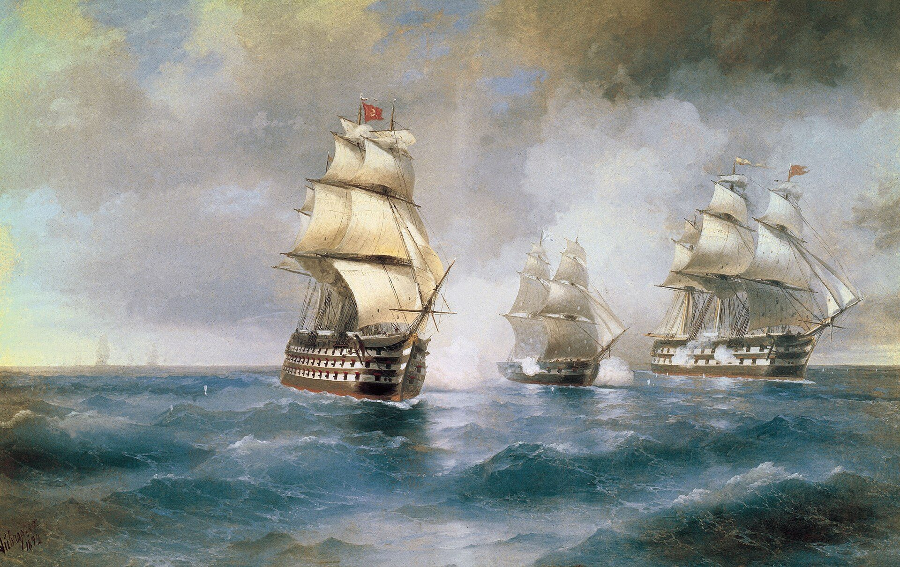
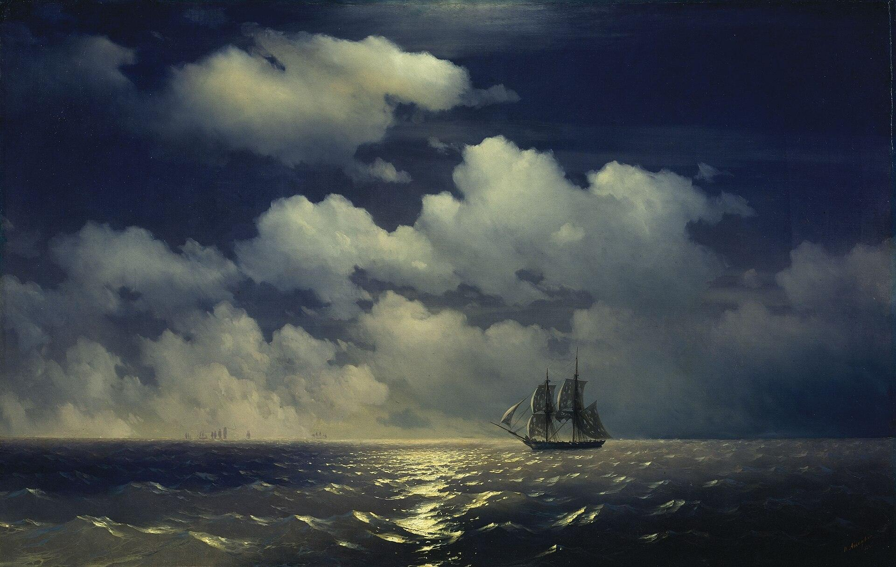
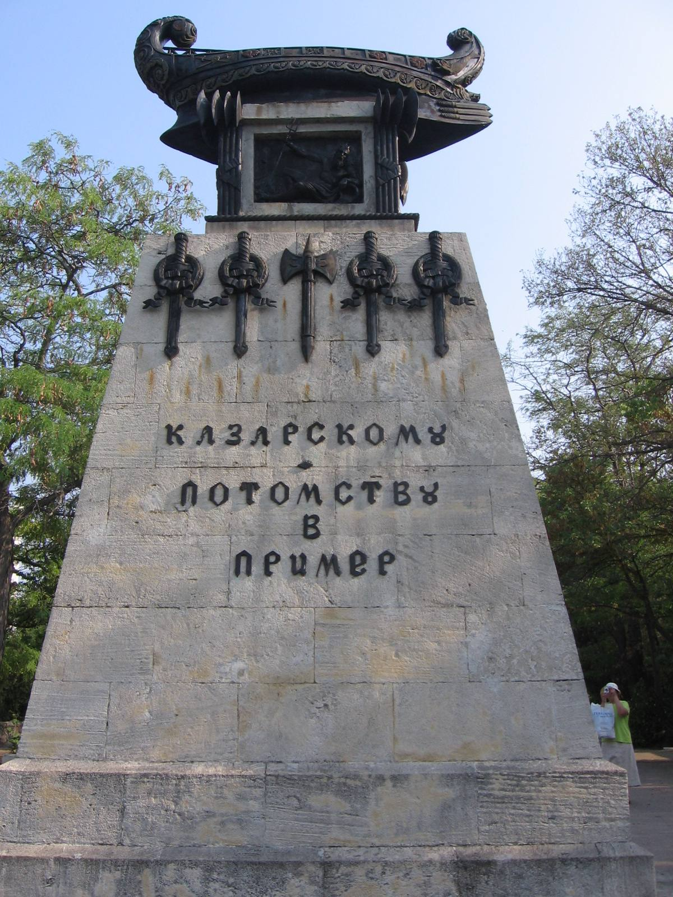

Иван Айвазовский, «Бриг „Меркурий“, атакованный двумя турецкими кораблями», 1892Художник писал бой через шестьдесят с лишним лет по донесениям и документам: бриг, идущий под огнём двух линейных кораблей, которых больше и во много раз сильнее.
Бриг «Меркурий»
За три дня до этого русский фрегат сдался без боя. Экипаж «Меркурия» положил пистолет у пороха — и пошёл в бой против десятикратного перевеса.
Экипаж выбрал не сдаться: совет постановил принять бой, а при угрозе захвата — взорвать крюйт-камеру. На порох положили заряженный пистолет.
Четыре часа против 184 орудий двух линейных кораблей — и бриг вернулся к своим, не спустив флага.
Кормовой Георгиевский флаг — второй случай в истории флота; на памятнике в Севастополе — «Казарскому. Потомству в пример».